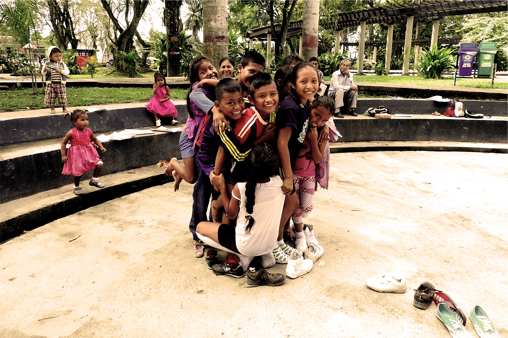
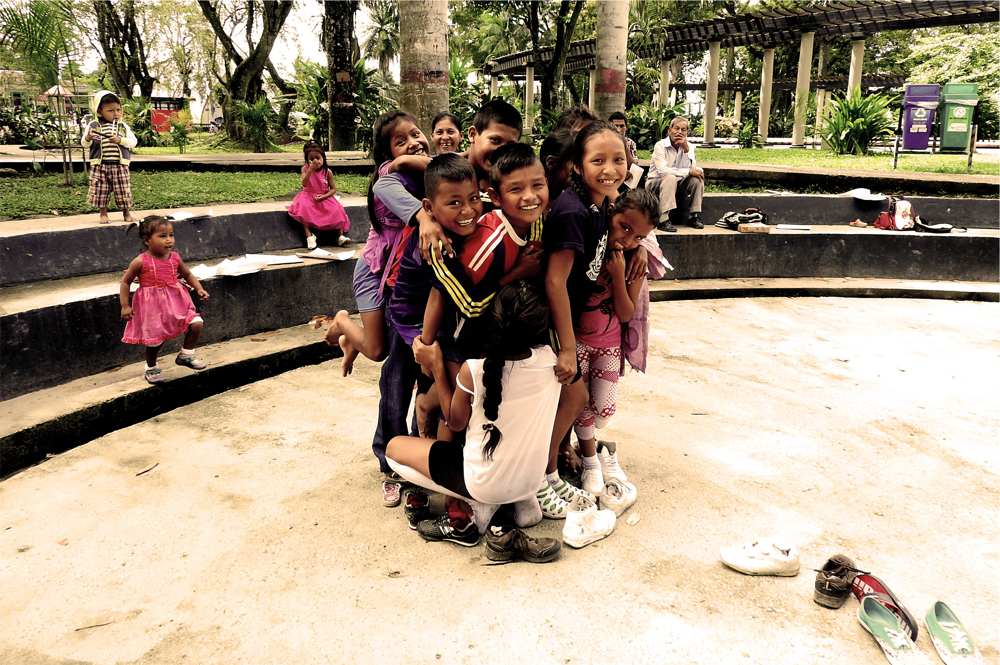
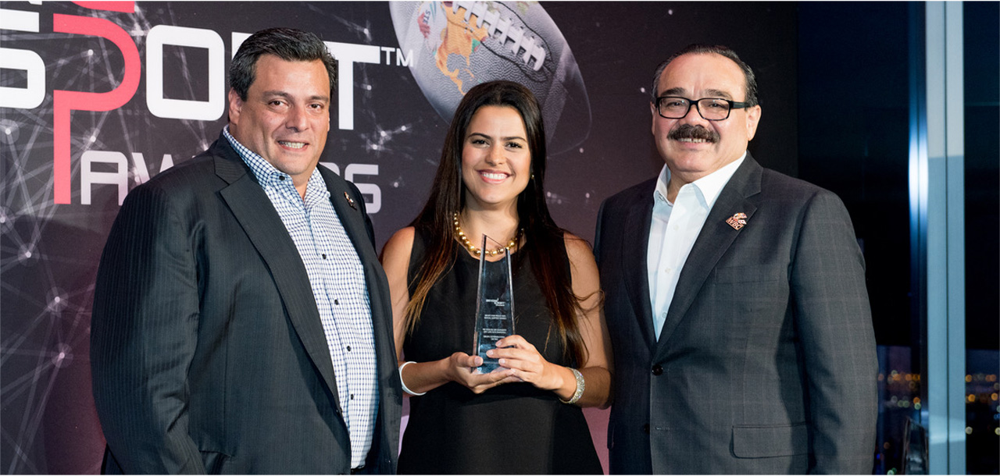
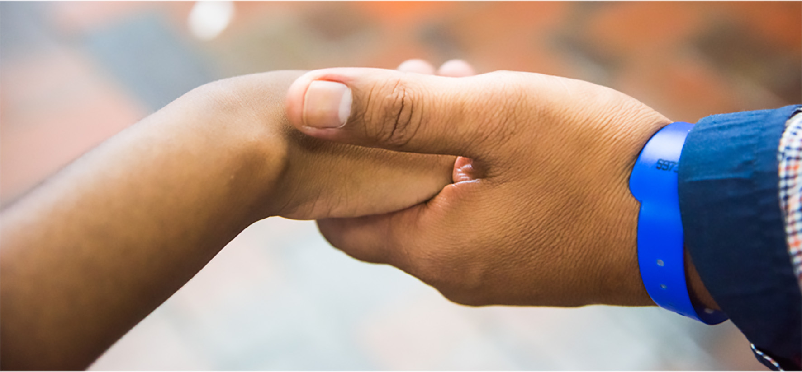

nuestro impacto
+35.000 personas de la comunidad impactadas, +260 convites comunitarios, +92 espacios deportivos mejorados, +150 torneos realizados, 70 entrenadores implementando la metodología. ¿Cómo lo hacemos?

noticias
Encuentros de ONG´s del sector Deporte para el
Desarrollo de Mingas Mayo Fight for peace Alliance (Califest, 28 de julio)
mision
Somos una organización no gubernamental que busca fortalecer las capacidades de las personas y las comunidades para la CONSTRUCCIÓN DE PAZ, en sociedades que han usado tradicionalmente la violencia como medio para tramitar sus conflictos. Por su gran valor pedagógico, el DEPORTE ha sido el elemento central en esta búsqueda. Más sobre nosotros
nuestro impacto
+35.000 personas de la comunidad impactadas, +260 convites comunitarios, +92 espacios deportivos mejorados, +150 torneos realizados, 70 entrenadores implementando la metodología. ¿Cómo lo hacemos?
premios y reconocimientos
GIP ha obtenido importantes reconocimientos a nivel internacional, entre los que se destaca el más importante a nivel de Sector de Deporte para el Desarrollo y la Paz en el mundo, Beyond Sport , que le fue otorgado en el 2017 en la ciudad de New York. En este mismo año, la Asociación Mundial de Boxeo le hizo entrega del cinturón de oro, por su contribución a la transformación social a través del deporte, y obtuvo el reconocimiento del Gobierno Nacional de Colombia (ARN) por su aporte significativo a la construcción de paz sostenible y duradera en el marco del post-acuerdo con las FARC. Saber más
conectados con el mundo
GIP hace parte de diversas alianzas y comunidades que le permiten estar conectado con otras organizaciones en el país y el mundo.
Entre estas se destacan:
Fight for Peace Alliance
Sport for Development and Peace
Aflora
Uniandinos
vinculate
Queremos que hagas parte del cambio. Aquí encontrarás las diferentes formas de vincularte con la organización o aportar a las diferentes iniciativas. Saber más
encuentranos aqui: